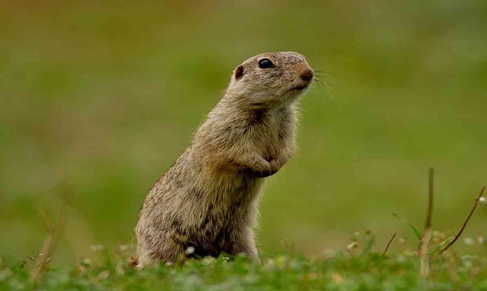
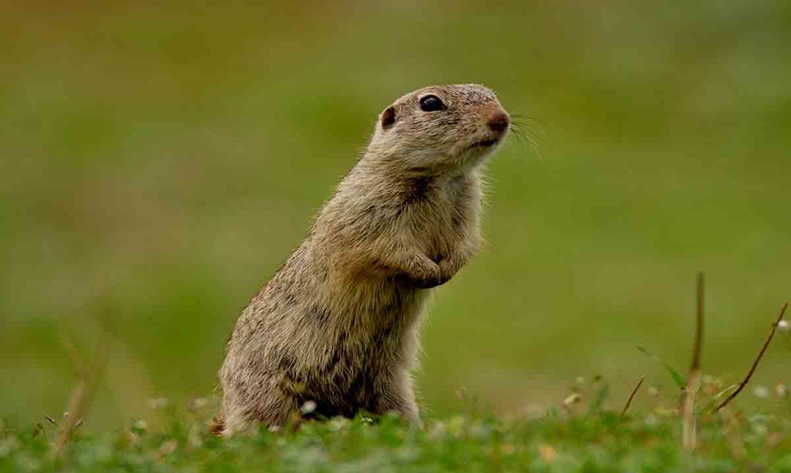
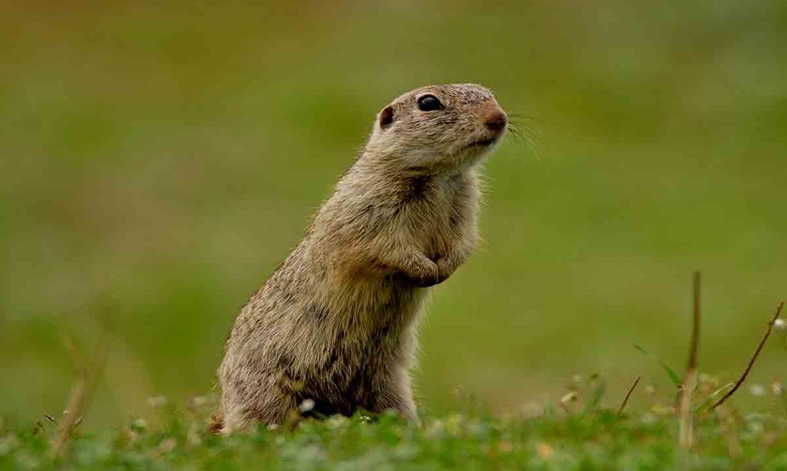

„Biodiversitate” este denumirea varietății de ecosisteme (capitalul natural), de specii și de gene din lume sau dintr-un anumit habitat. Ea este esențială pentru starea de bine a oamenilor, deoarece oferă servicii care susțin economiile și societățile noastre. De asemenea, biodiversitatea este esențială pentru serviciile ecosistemice – serviciile pe care le furnizează natura –, cum sunt polenizarea, reglarea climei, protecția împotriva inundațiilor, fertilitatea solului și producerea de alimente, combustibili, fibre și medicamente.
Flora
Fauna existentă în județul Ialomița se poate clasifica astfel :
• animale de stepă și de pădure : popândăul, hârciog, orbete, șoarecele de câmp, dihor de stepă, iepure de câmp, prepeliță, potârniche, șoarecele de câmp, nevăstuica, căpriorul, mistrețul, vulpea, șoarecele de pădure, viezurele, iar dintre reptile menționăm: șarpele rău, șopârla de stepă, șopârla de câmp.
S-au mai semnalat : bizamul, câinele enot, vrabia spaniolă. Până în 1940 (în vestul județului) și 1967 (în estul său) a existat dropia, azi dispărută. Și spurcaciul a dispărut după 1945.
• păsări, cele mai numeroase fiind : prigoria, fluierarul, dumbrăveanca, ciocârlia, cioara, vrabia, graurul, turturica, guguștiucul, fazanul colorizat, prepelița, potârnichea, vrabia, sitarul, lișița, rața sălbatică, șoimul dunărean, etc.
• ihtiofauna este alcătuită din : bibanul, plătică, crap, caracudă, babușcă, știucă, somn, nisetru, morun, etc.
O parte importantă din fauna județului Ialomița este de valoare și interes cinegetic, constituind o resursă pentru dezvoltare locală durabilă.

Fauna
Vegetația județului Ialomița are caracter de stepă pe 65% din suprafața sa, întâlnindu-se următoarele tipuri :
• de stepă primară la Cocora, Sălcioara, Movila, formată din graminee lipsite de valoare furajeră;
• de silvostepă, în sud-vestul județului, cu păduri mari la Groasa, Odaia Călugărului, Sinești, Deleanca, Morăreanca, unde se înregistrează arborele de stejar pufos și brumăriu, cer, gârniță, salcâm ;
• de stepă, cu arbori și arboret de pădure, regăsiți în pădurile de la Redea (com. Ion Roată), Cornatele (com. Cosâmbești), Beslești - Popești (com. Sudiți), Ciunga (com. Movila) și care cuprind frasinul, părul și mărul pădureț, ulmul, jugastrul, păducelul, porumbarul, lemnul câinesc, măceșul, cornul, sângerul.
• de luncă : stuf, papură, rogoz, salcie, plop, stejar în Lunca Ialomiței (Bărcănești, Speteni, Alexeni, Slobozia, Bueasca, Andrășești) și în Lunca Dunării (Bordușani, Săltava, Balaban) ;
• lacustră - orzoaica de baltă, brădișul, lintița, coada calului, limba broaștei, săgeata apei, cucuta de apă, piciorul cocorului ;
• alte tipuri : urzica, troscot, pălămida, mohor, mușețel, coada șoricelului, păpădie, ceapa ciorii, ghiocel, brebenel, etc.
Contact
Pentru mai multe informații despre biodiversitatea județului Ialomița, nu ezitați să ne contactați:
 
